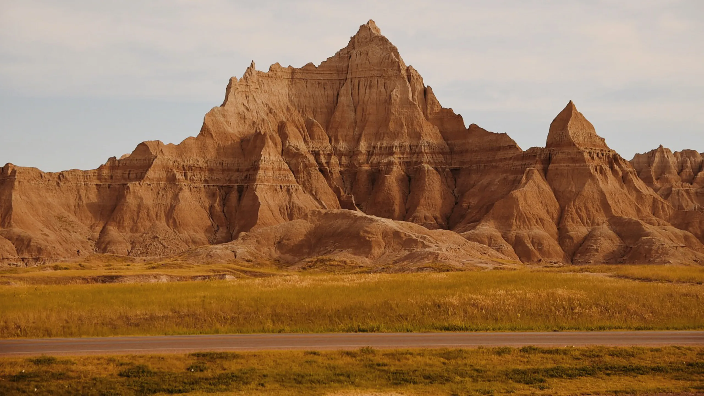

Hi, I am Izaiah Niemuth. This site is about places I have visited and what makes them interesting.
I enjoy traveling because it lets me see new scenery, learn local history, and try different foods.

One of my favorite hobbies is spending time outdoors. I like walking near the water, taking photos of sunsets, and relaxing on beaches when the weather is nice.
Another thing I like to do is explore towns and cities on foot. I enjoy checking out local shops, museums, and parks, and I like learning how people live in different places.
On the favorite places page, I list destinations I love and share what makes them special. Use the navigation above to explore more.